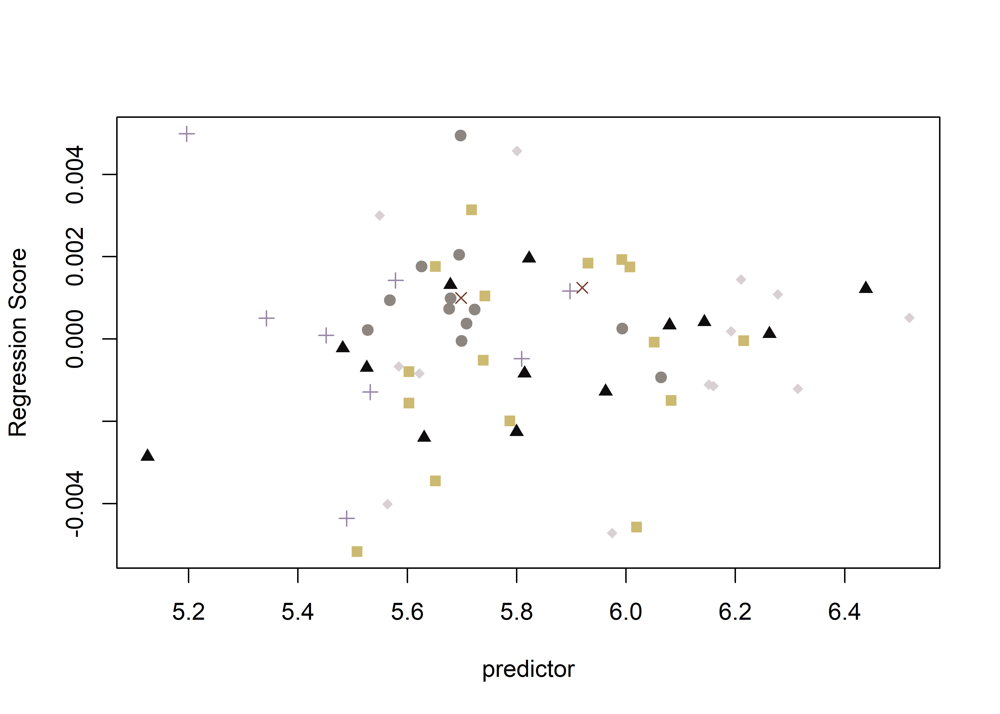
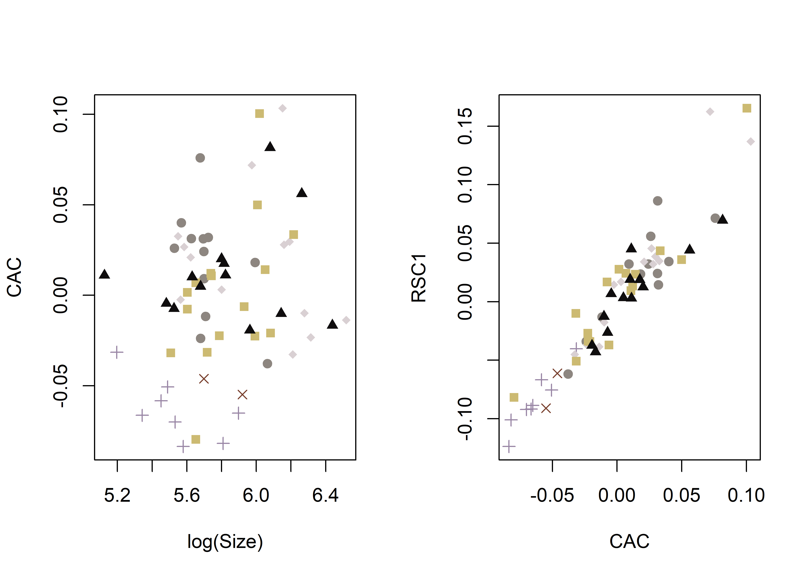

Chapter 5 Geometric morphometrics
This effort follows recent analyses of Gahagan biface shapes across the southern Caddo area and central Texas (Selden Jr., Dockall, and Shafer 2018; Selden Jr., Dockall, and Dubied 2020), where Gahgagan bifaces were found to differ in shape across the same geography as the Smithport Plain and Hickory Engraved bottles (Selden Jr. 2018a, 2018b, 2019, 2021). The analysis builds upon previous discussions and analyses conducted by Shafer (1973, 1974, 2006). A succinct overview of the analytical procedures used for this analysis is provided in the manuscript, and the analytical code provided in this document can be used to reproduce the results exactly.

(#fig:gahagan bifaces 2D)Gahagan bifaces from the southern Caddo area (SCA) north (left), south (center), and central Texas regions (right).
5.1 Load geomorph and data
# load geomorph
#devtools::install_github("geomorphR/geomorph", ref = "Stable", build_vignettes = TRUE)
library(here)
library(geomorph)
library(tidyverse)
library(wesanderson)
source('readmulti.csv.R')
# read .csv files
setwd("./data.3d1")
filelist <- list.files(pattern = ".csv")
coords <- readmulti.csv(filelist)
setwd("../")
# read qualitative data
qdata<-read.csv("qdata.csv",header=TRUE, row.names=1)
qdata<-qdata[match(dimnames(coords)[[3]],rownames(qdata)),]5.2 Generalized Procrustes Analysis
Landmark data were aligned to a global coordinate system (Kendall 1981, 1984; Slice 2001), achieved through generalized Procrustes superimposition (Rohlf and Slice 1990) performed in R 4.0.2 (R Core Development Team, 2020) using the geomorph library v. 3.3.1 (Adams et al. 2017; Adams and Otárola-Castillo 2013). Procrustes superimposition translates, scales, and rotates the coordinate data to allow for comparisons among objects (Gower 1975; Rohlf and Slice 1990). The geomorph package uses a partial Procrustes superimposition that projects the aligned specimens into tangent space subsequent to alignment in preparation for the use of multivariate methods that assume linear space (Rohlf 1999; Slice 2001).
Y.gpa<-gpagen(coords,
PrinAxes = TRUE,
print.progress = FALSE)
# plot(Y.gpa)
# 3D gpa plot
#knitr::include_graphics('images/gpa3d.png')# geomorph data frame
gdf<-geomorph.data.frame(shape = Y.gpa$coords,
size = Y.gpa$Csize,
region = qdata$region,
region2 = qdata$region2,
mortuary = qdata$mortuary,
cntxt = qdata$context)
# add centroid size to qdata
qdata$csz <- Y.gpa$Csize
# boxplot - region 2 by centroid size
csz <- qdata$csz
cntxt <- qdata$context
# print qdata
knitr::kable(qdata,
align = "ccccc",
caption = "Attributes included in qdata.")| trinomial | sitename | context | region | region2 | mortuary | length | csz | |
|---|---|---|---|---|---|---|---|---|
| 3Bb1 | 16CD12 | Mounds Plantation | 16cd12-bp2 | SCA | SCA-north | yes | 131.5037 | 333.3894 |
| 3Bb3 | 16CD12 | Mounds Plantation | 16cd12-bp2 | SCA | SCA-north | yes | 94.3363 | 242.0058 |
| 3Bb4 | 16CD12 | Mounds Plantation | 16cd12-bp2 | SCA | SCA-north | yes | 92.0793 | 233.0918 |
| 3Bb5 | 16CD12 | Mounds Plantation | 16cd12-bp2 | SCA | SCA-north | yes | 72.0949 | 180.6294 |
| 3Bb6 | 16CD12 | Mounds Plantation | 16cd12-bp2 | SCA | SCA-north | yes | 146.7357 | 364.1225 |
| 3Bb7 | 16CD12 | Mounds Plantation | 16cd12-bp2 | SCA | SCA-north | yes | 101.0797 | 252.6581 |
| 3Bb8 | 16CD12 | Mounds Plantation | 16cd12-bp2 | SCA | SCA-north | yes | 83.7998 | 208.9919 |
| 4078-11 | 41CE19 | George C Davis | 41ce19-f134 | SCA | SCA-south | yes | 117.2529 | 305.8570 |
| 4078-12 | 41CE19 | George C Davis | 41ce19-f134 | SCA | SCA-south | yes | 115.4852 | 297.2717 |
| 4078-13 | 41CE19 | George C Davis | 41ce19-f134 | SCA | SCA-south | yes | 116.9862 | 301.3703 |
| 4078-14 | 41CE19 | George C Davis | 41ce19-f134 | SCA | SCA-south | yes | 95.4462 | 251.5336 |
| 4078-14B | 41CE19 | George C Davis | 41ce19-f134 | SCA | SCA-south | yes | 108.8920 | 291.8615 |
| 4078-22 | 41CE19 | George C Davis | 41ce19-f134 | SCA | SCA-south | yes | 100.1365 | 261.8585 |
| 4078-30 | 41CE19 | George C Davis | 41ce19-f134 | SCA | SCA-south | yes | 113.6609 | 298.6175 |
| 4078-32 | 41CE19 | George C Davis | 41ce19-f134 | SCA | SCA-south | yes | 104.2836 | 277.5665 |
| 4078-45 | 41CE19 | George C Davis | 41ce19-f134 | SCA | SCA-south | yes | 116.8559 | 292.6731 |
| 4078-72 | 41CE19 | George C Davis | 41ce19-f134 | SCA | SCA-south | yes | 113.0991 | 298.0688 |
| 4078-8 | 41CE19 | George C Davis | 41ce19-f134 | SCA | SCA-south | yes | 170.5638 | 430.0098 |
| 4078-9 | 41CE19 | George C Davis | 41ce19-f134 | SCA | SCA-south | yes | 151.0481 | 400.5757 |
| 424-169 | 41CE19 | George C Davis | 41ce19-f119 | SCA | SCA-south | yes | 99.8860 | 260.7870 |
| 424-218 | 41CE19 | George C Davis | 41ce19-f119 | SCA | SCA-south | yes | 169.5278 | 469.4424 |
| 424-221 | 41CE19 | George C Davis | 41ce19-f119 | SCA | SCA-south | yes | 176.6937 | 473.3687 |
| 424-230 | 41CE19 | George C Davis | 41ce19-f119 | SCA | SCA-south | yes | 105.1862 | 276.4771 |
| 424-33 | 41CE19 | George C Davis | 41ce19-f119 | SCA | SCA-south | yes | 98.1234 | 257.0546 |
| 424-39 | 41CE19 | George C Davis | 41ce19-f119 | SCA | SCA-south | yes | 217.1066 | 552.4138 |
| 424-40 | 41CE19 | George C Davis | 41ce19-f119 | SCA | SCA-south | yes | 137.8055 | 393.3146 |
| 424-41 | 41CE19 | George C Davis | 41ce19-f119 | SCA | SCA-south | yes | 185.9029 | 488.9323 |
| 424-50 | 41CE19 | George C Davis | 41ce19-f119 | SCA | SCA-south | yes | 195.5831 | 497.9108 |
| 424-53 | 41CE19 | George C Davis | 41ce19-f119 | SCA | SCA-south | yes | 205.5500 | 532.5167 |
| 463-1 | 41CE19 | George C Davis | 41ce19-f119 | SCA | SCA-south | yes | 265.5225 | 677.5336 |
| 463-16 | 41CE19 | George C Davis | 41ce19-f119 | SCA | SCA-south | yes | 128.0659 | 330.4671 |
| 463-23 | 41CE19 | George C Davis | 41ce19-f119 | SCA | SCA-south | yes | 101.2441 | 266.2417 |
| 489 | 16RR1 | Gahagan Mound | 16rr1-bp2 | SCA | SCA-south | yes | 127.7488 | 326.2118 |
| 490 | 16RR1 | Gahagan Mound | 16rr1-bp2 | SCA | SCA-south | yes | 105.2406 | 271.2320 |
| 532 | 16RR1 | Gahagan Mound | 16rr1-bp2 | SCA | SCA-south | yes | 117.7216 | 311.6831 |
| 533 | 16RR1 | Gahagan Mound | 16rr1-bp2 | SCA | SCA-south | yes | 114.1056 | 284.6977 |
| 541 | 16RR1 | Gahagan Mound | 16rr1-bp2 | SCA | SCA-south | yes | 157.0695 | 400.2734 |
| 542 | 16RR1 | Gahagan Mound | 16rr1-bp2 | SCA | SCA-south | yes | 95.8444 | 246.6156 |
| 543 | 16RR1 | Gahagan Mound | 16rr1-bp2 | SCA | SCA-south | yes | 171.9795 | 438.0853 |
| 544 | 16RR1 | Gahagan Mound | 16rr1-bp2 | SCA | SCA-south | yes | 148.7254 | 376.3687 |
| 545 | 16RR1 | Gahagan Mound | 16rr1-bp2 | SCA | SCA-south | yes | 146.8326 | 411.2969 |
| 546 | 16RR1 | Gahagan Mound | 16rr1-bp2 | SCA | SCA-south | yes | 156.8799 | 406.2742 |
| 547 | 16RR1 | Gahagan Mound | 16rr1-bp2 | SCA | SCA-south | yes | 106.5601 | 271.2284 |
| 548 | 16RR1 | Gahagan Mound | 16rr1-bp2 | SCA | SCA-south | yes | 119.8263 | 310.6772 |
| 549 | 16RR1 | Gahagan Mound | 16rr1-bp2 | SCA | SCA-south | yes | 108.1385 | 284.7020 |
| 550 | 16RR1 | Gahagan Mound | 16rr1-bp2 | SCA | SCA-south | yes | 121.3647 | 304.1039 |
| 551 | 16RR1 | Gahagan Mound | 16rr1-bp2 | SCA | SCA-south | yes | 163.9165 | 424.7098 |
| 569 | 16RR1 | Gahagan Mound | 16rr1-bp2 | SCA | SCA-south | yes | 190.7678 | 500.4181 |
| 593 | 16RR1 | Gahagan Mound | 16rr1-bp3 | SCA | SCA-south | yes | 246.2476 | 625.5836 |
| 605 | 16RR1 | Gahagan Mound | 16rr1-bp3 | SCA | SCA-south | yes | 181.5256 | 465.5751 |
| 606 | 16RR1 | Gahagan Mound | 16rr1-bp3 | SCA | SCA-south | yes | 150.1445 | 388.6381 |
| 607 | 16RR1 | Gahagan Mound | 16rr1-bp3 | SCA | SCA-south | yes | 125.2065 | 330.2037 |
| 608 | 16RR1 | Gahagan Mound | 16rr1-bp3 | SCA | SCA-south | yes | 129.3802 | 335.0552 |
| 609 | 16RR1 | Gahagan Mound | 16rr1-bp3 | SCA | SCA-south | yes | 130.6773 | 337.8171 |
| 610 | 16RR1 | Gahagan Mound | 16rr1-bp3 | SCA | SCA-south | yes | 107.4900 | 278.8302 |
| 611 | 16RR1 | Gahagan Mound | 16rr1-bp3 | SCA | SCA-south | yes | 114.8306 | 292.5582 |
| 612 | 16RR1 | Gahagan Mound | 16rr1-bp3 | SCA | SCA-south | yes | 98.4037 | 251.0676 |
| 613 | 16RR1 | Gahagan Mound | 16rr1-bp3 | SCA | SCA-south | yes | 92.3582 | 240.2875 |
| 614 | 16RR1 | Gahagan Mound | 16rr1-bp3 | SCA | SCA-south | yes | 64.8445 | 168.1358 |
| 622 | 16RR1 | Gahagan Mound | 16rr1-bp3 | SCA | SCA-south | yes | 161.2902 | 436.7907 |
| 666 | 16RR1 | Gahagan Mound | 16rr1-bp3 | SCA | SCA-south | yes | 199.4707 | 524.4048 |
| BlkThn | 16CD12 | Mounds Plantation | 16cd12-bp2 | SCA | SCA-north | yes | 107.3962 | 264.6985 |
| Case2LG | 16CD12 | Mounds Plantation | 16cd12-bp5 | SCA | SCA-north | yes | 149.3291 | 372.3756 |
| Case2SM | 16CD12 | Mounds Plantation | 16cd12-bp5 | SCA | SCA-north | yes | 120.9068 | 298.4132 |
##
## Ordination type: Principal Component Analysis
## Centering by OLS mean
## Orthogonal projection of OLS residuals
## Number of observations: 64
## Number of vectors 64
##
## Importance of Components:
## Comp1 Comp2 Comp3 Comp4 Comp5
## Eigenvalues 0.003457092 0.0004976554 0.0002224016 0.0001317437 0.0001162059
## Proportion of Variance 0.717706160 0.1033152769 0.0461714611 0.0273505304 0.0241248104
## Cumulative Proportion 0.717706160 0.8210214371 0.8671928982 0.8945434286 0.9186682390
## Comp6 Comp7 Comp8 Comp9 Comp10
## Eigenvalues 8.374617e-05 6.729966e-05 5.183255e-05 4.457031e-05 0.0000195789
## Proportion of Variance 1.738604e-02 1.397168e-02 1.076065e-02 9.252976e-03 0.0040646577
## Cumulative Proportion 9.360543e-01 9.500260e-01 9.607866e-01 9.700396e-01 0.9741042421
## Comp11 Comp12 Comp13 Comp14 Comp15
## Eigenvalues 1.769174e-05 1.271407e-05 1.102342e-05 9.127530e-06 7.975748e-06
## Proportion of Variance 3.672877e-03 2.639492e-03 2.288507e-03 1.894912e-03 1.655797e-03
## Cumulative Proportion 9.777771e-01 9.804166e-01 9.827051e-01 9.846000e-01 9.862558e-01
## Comp16 Comp17 Comp18 Comp19 Comp20
## Eigenvalues 7.307882e-06 5.655133e-06 5.080836e-06 4.524058e-06 3.916429e-06
## Proportion of Variance 1.517146e-03 1.174028e-03 1.054802e-03 9.392127e-04 8.130665e-04
## Cumulative Proportion 9.877730e-01 9.889470e-01 9.900018e-01 9.909410e-01 9.917541e-01
## Comp21 Comp22 Comp23 Comp24 Comp25
## Eigenvalues 3.285265e-06 3.089308e-06 2.785556e-06 2.664293e-06 2.291321e-06
## Proportion of Variance 6.820343e-04 6.413528e-04 5.782927e-04 5.531180e-04 4.756875e-04
## Cumulative Proportion 9.924361e-01 9.930775e-01 9.936558e-01 9.942089e-01 9.946846e-01
## Comp26 Comp27 Comp28 Comp29 Comp30
## Eigenvalues 2.231610e-06 1.965617e-06 1.802707e-06 1.622826e-06 1.497360e-06
## Proportion of Variance 4.632913e-04 4.080700e-04 3.742492e-04 3.369053e-04 3.108579e-04
## Cumulative Proportion 9.951479e-01 9.955559e-01 9.959302e-01 9.962671e-01 9.965779e-01
## Comp31 Comp32 Comp33 Comp34 Comp35
## Eigenvalues 1.469836e-06 1.228177e-06 1.118590e-06 1.074815e-06 1.022641e-06
## Proportion of Variance 3.051438e-04 2.549745e-04 2.322237e-04 2.231360e-04 2.123045e-04
## Cumulative Proportion 9.968831e-01 9.971381e-01 9.973703e-01 9.975934e-01 9.978057e-01
## Comp36 Comp37 Comp38 Comp39 Comp40
## Eigenvalues 9.345124e-07 8.381300e-07 7.742587e-07 6.399529e-07 6.300426e-07
## Proportion of Variance 1.940086e-04 1.739992e-04 1.607392e-04 1.328568e-04 1.307994e-04
## Cumulative Proportion 9.979997e-01 9.981737e-01 9.983345e-01 9.984673e-01 9.985981e-01
## Comp41 Comp42 Comp43 Comp44 Comp45
## Eigenvalues 5.777701e-07 5.269950e-07 5.209454e-07 4.717766e-07 4.398575e-07
## Proportion of Variance 1.199474e-04 1.094063e-04 1.081504e-04 9.794273e-05 9.131620e-05
## Cumulative Proportion 9.987181e-01 9.988275e-01 9.989356e-01 9.990336e-01 9.991249e-01
## Comp46 Comp47 Comp48 Comp49 Comp50
## Eigenvalues 4.054882e-07 4.001211e-07 3.796989e-07 3.426457e-07 3.132800e-07
## Proportion of Variance 8.418098e-05 8.306676e-05 7.882703e-05 7.113462e-05 6.503820e-05
## Cumulative Proportion 9.992091e-01 9.992921e-01 9.993710e-01 9.994421e-01 9.995071e-01
## Comp51 Comp52 Comp53 Comp54 Comp55
## Eigenvalues 2.991601e-07 2.58718e-07 2.458877e-07 2.363831e-07 2.262233e-07
## Proportion of Variance 6.210684e-05 5.37109e-05 5.104728e-05 4.907409e-05 4.696487e-05
## Cumulative Proportion 9.995692e-01 9.99623e-01 9.996740e-01 9.997231e-01 9.997700e-01
## Comp56 Comp57 Comp58 Comp59 Comp60
## Eigenvalues 2.077933e-07 1.850015e-07 1.670361e-07 1.459504e-07 1.343719e-07
## Proportion of Variance 4.313874e-05 3.840706e-05 3.467737e-05 3.029989e-05 2.789615e-05
## Cumulative Proportion 9.998132e-01 9.998516e-01 9.998863e-01 9.999166e-01 9.999445e-01
## Comp61 Comp62 Comp63 Comp64
## Eigenvalues 1.014766e-07 9.166551e-08 7.437560e-08 1.423063e-33
## Proportion of Variance 2.106695e-05 1.903013e-05 1.544068e-05 2.954337e-31
## Cumulative Proportion 9.999655e-01 9.999846e-01 1.000000e+00 1.000000e+005.3 Test Hypothesis
5.3.1 Boxplot
# boxplot of Gahagan biface centroid size by burial context
csz.cntxt <- ggplot(qdata, aes(x = cntxt, y = csz, color = cntxt)) +
geom_boxplot() +
geom_dotplot(binaxis = 'y', stackdir = 'center', dotsize = 0.3) +
scale_colour_manual(values = wes_palette("IsleofDogs1")) +
theme(legend.position = "none") +
labs(x = 'Burial Context', y = 'Centroid Size')
# render plot
csz.cntxt## `stat_bindot()` using `bins = 30`. Pick better value with `binwidth`.(#fig:box.h1)Boxplot of centroid size by Heartland (in/out).
5.3.2 Principal Components Analysis
Principal components analysis (Jolliffe 2002) was used to visualise shape variation among the bifaces. The shape changes described by each principal axis are commonly visualized using thin-plate spline warping of a reference 3D mesh (Klingenberg 2013; Sherratt et al. 2014).
# set plot parameters to plot by burial context
pch.gps.cntxt <- c(3,4,15,17:19)[as.factor(cntxt)]
col.gps.cntxt <- wes_palette("IsleofDogs1")[as.factor(cntxt)]
col.hull.cntxt <- c("#9986A5","#8D8680","#D9D0D3","#CCBA72","#0F0D0E","#79402E")
# plot pca by region 2
pc.plot1 <- plot(pca, asp = 1,
pch = pch.gps.cntxt,
col = col.gps.cntxt)
shapeHulls(pc.plot1,
groups = cntxt,
group.cols = col.hull.cntxt)(#fig:pca.h1)Results of PCA with central Texas sample in gray squares, southern Caddo area (north) in orange triangles, and southern Caddo area (south) in tan circles.
5.3.3 Define models
# allometry
fit.size <- procD.lm(shape ~ size,
data = gdf,
print.progress = FALSE,
iter = 9999)
# allometry - common allometry, different means -> cntxt
fit.sz.ccntxt <- procD.lm(shape ~ size + cntxt,
data = gdf,
print.progress = FALSE,
iter = 9999)
# allometry - unique allometries -> cntxt
fit.sz.ucntxt <- procD.lm(shape ~ size * cntxt,
data = gdf,
print.progress = FALSE,
iter = 9999)
# size as a function of group
fit.sizecntxt <- procD.lm(size ~ cntxt,
data = gdf,
print.progress = FALSE,
iter = 9999)
# shape as a function of group
fit.shapecntxt <- procD.lm(shape ~ cntxt,
data = gdf,
print.progress = FALSE,
iter = 9999)5.3.4 Allometry
##
## Analysis of Variance, using Residual Randomization
## Permutation procedure: Randomization of null model residuals
## Number of permutations: 10000
## Estimation method: Ordinary Least Squares
## Sums of Squares and Cross-products: Type I
## Effect sizes (Z) based on F distributions
##
## Df SS MS Rsq F Z Pr(>F)
## size 1 0.004323 0.0043230 0.01425 0.896 0.35497 0.3667
## Residuals 62 0.299139 0.0048248 0.98575
## Total 63 0.303462
##
## Call: procD.lm(f1 = shape ~ size, iter = 9999, data = gdf, print.progress = FALSE)##
## Analysis of Variance, using Residual Randomization
## Permutation procedure: Randomization of null model residuals
## Number of permutations: 10000
## Estimation method: Ordinary Least Squares
## Sums of Squares and Cross-products: Type I
## Effect sizes (Z) based on F distributions
##
## Df SS MS Rsq F Z Pr(>F)
## size 1 0.004323 0.004323 0.01425 1.2288 0.6996 0.2516
## cntxt 5 0.098613 0.019723 0.32496 5.6061 3.9259 1e-04 ***
## Residuals 57 0.200527 0.003518 0.66080
## Total 63 0.303462
## ---
## Signif. codes: 0 '***' 0.001 '**' 0.01 '*' 0.05 '.' 0.1 ' ' 1
##
## Call: procD.lm(f1 = shape ~ size + cntxt, iter = 9999, data = gdf, print.progress = FALSE)##
## Analysis of Variance, using Residual Randomization
## Permutation procedure: Randomization of null model residuals
## Number of permutations: 10000
## Estimation method: Ordinary Least Squares
## Sums of Squares and Cross-products: Type I
## Effect sizes (Z) based on F distributions
##
## Df SS MS Rsq F Z Pr(>F)
## size 1 0.004323 0.0043230 0.01425 1.2390 0.7063 0.2504
## cntxt 5 0.098613 0.0197225 0.32496 5.6528 3.9082 1e-04 ***
## size:cntxt 5 0.019101 0.0038201 0.06294 1.0949 0.3978 0.3445
## Residuals 52 0.181426 0.0034890 0.59785
## Total 63 0.303462
## ---
## Signif. codes: 0 '***' 0.001 '**' 0.01 '*' 0.05 '.' 0.1 ' ' 1
##
## Call: procD.lm(f1 = shape ~ size * cntxt, iter = 9999, data = gdf, print.progress = FALSE)# allometry plots
# regscore (Drake and Klingenberg 2008)
plot(fit.size, type = "regression", reg.type = "RegScore",
predictor = log(gdf$size), pch = pch.gps.cntxt,
col = col.gps.cntxt)
# common allometric component (Mitteroecker 2004)
plotAllometry(fit.sz.ccntxt, size = gdf$size, logsz = TRUE,
method = "CAC", pch = pch.gps.cntxt,
col = col.gps.cntxt)
# size-shape pca (Mitteroecker 2004)
plotAllometry(fit.size, size = gdf$size, logsz = TRUE,
method = "size.shape", pch = pch.gps.cntxt,
col = col.gps.cntxt)5.3.5 Procrustes ANOVA
A residual randomization permutation procedure (RRPP; n = 10,000 permutations) was used for all Procrustes ANOVAs (Adams and Collyer 2015; Collyer and Adams 2018), which has higher statistical power and a greater ability to identify patterns in the data should they be present (Anderson and Ter Braak 2003). To assess whether shape changes with size (allometry), and differs by group (region), Procrustes ANOVAs (Goodall 1991) were also run that enlist effect-sizes (zscores) computed as standard deviates of the generated sampling distributions (Collyer, Sekora, and Adams 2015).
##
## Analysis of Variance, using Residual Randomization
## Permutation procedure: Randomization of null model residuals
## Number of permutations: 10000
## Estimation method: Ordinary Least Squares
## Sums of Squares and Cross-products: Type I
## Effect sizes (Z) based on F distributions
##
## Df SS MS Rsq F Z Pr(>F)
## cntxt 5 0.095517 0.0191035 0.31476 5.3283 3.8054 1e-04 ***
## Residuals 58 0.207945 0.0035853 0.68524
## Total 63 0.303462
## ---
## Signif. codes: 0 '***' 0.001 '**' 0.01 '*' 0.05 '.' 0.1 ' ' 1
##
## Call: procD.lm(f1 = shape ~ cntxt, iter = 9999, data = gdf, print.progress = FALSE)# pairwise comparison of LS means = which differ?
sh.cntxt <- pairwise(fit.shapecntxt,
groups = qdata$context)
summary(sh.cntxt,
confidence = 0.95,
test.type = "dist")##
## Pairwise comparisons
##
## Groups: 16cd12-bp2 16cd12-bp5 16rr1-bp2 16rr1-bp3 41ce19-f119 41ce19-f134
##
## RRPP: 10000 permutations
##
## LS means:
## Vectors hidden (use show.vectors = TRUE to view)
##
## Pairwise distances between means, plus statistics
## d UCL (95%) Z Pr > d
## 16cd12-bp2:16cd12-bp5 0.02125514 0.09839057 -1.6768553 0.9550
## 16cd12-bp2:16rr1-bp2 0.09142420 0.05306725 2.7052099 0.0002
## 16cd12-bp2:16rr1-bp3 0.09610764 0.05513031 2.7333541 0.0004
## 16cd12-bp2:41ce19-f119 0.11466654 0.05513982 3.0099286 0.0001
## 16cd12-bp2:41ce19-f134 0.11022001 0.05561002 2.9734350 0.0002
## 16cd12-bp5:16rr1-bp2 0.08227757 0.09478945 1.4272384 0.0889
## 16cd12-bp5:16rr1-bp3 0.08625964 0.09583233 1.5002139 0.0764
## 16cd12-bp5:41ce19-f119 0.10672388 0.09441947 1.9081618 0.0272
## 16cd12-bp5:41ce19-f134 0.10050463 0.09576898 1.7967481 0.0392
## 16rr1-bp2:16rr1-bp3 0.01887681 0.04490732 -0.2572097 0.5892
## 16rr1-bp2:41ce19-f119 0.02776345 0.04526319 0.6022139 0.2878
## 16rr1-bp2:41ce19-f134 0.02598337 0.04637444 0.4282074 0.3418
## 16rr1-bp3:41ce19-f119 0.02696049 0.04709234 0.4608496 0.3301
## 16rr1-bp3:41ce19-f134 0.01894269 0.04857723 -0.4164250 0.6376
## 41ce19-f119:41ce19-f134 0.01793345 0.04823926 -0.5681164 0.6971# pairwise distance between variances = standardization?
summary(sh.cntxt,
confidence = 0.95,
test.type = "var")##
## Pairwise comparisons
##
## Groups: 16cd12-bp2 16cd12-bp5 16rr1-bp2 16rr1-bp3 41ce19-f119 41ce19-f134
##
## RRPP: 10000 permutations
##
##
## Observed variances by group
##
## 16cd12-bp2 16cd12-bp5 16rr1-bp2 16rr1-bp3 41ce19-f119 41ce19-f134
## 0.0010385632 0.0004395759 0.0046066606 0.0019679229 0.0047478771 0.0031454353
##
## Pairwise distances between variances, plus statistics
## d UCL (95%) Z Pr > d
## 16cd12-bp2:16cd12-bp5 0.0005989873 0.009856478 -0.81843418 0.8077
## 16cd12-bp2:16rr1-bp2 0.0035680974 0.003931076 1.38463106 0.0771
## 16cd12-bp2:16rr1-bp3 0.0009293597 0.004097712 -0.37080827 0.6376
## 16cd12-bp2:41ce19-f119 0.0037093139 0.004167899 1.36425467 0.0820
## 16cd12-bp2:41ce19-f134 0.0021068721 0.004175347 0.51103900 0.3340
## 16cd12-bp5:16rr1-bp2 0.0041670847 0.010043677 1.01034400 0.1040
## 16cd12-bp5:16rr1-bp3 0.0015283470 0.009880238 -0.04521613 0.5357
## 16cd12-bp5:41ce19-f119 0.0043083012 0.009984647 1.03088774 0.1085
## 16cd12-bp5:41ce19-f134 0.0027058595 0.009840269 0.51000311 0.2832
## 16rr1-bp2:16rr1-bp3 0.0026387377 0.003409376 1.14262391 0.1328
## 16rr1-bp2:41ce19-f119 0.0001412165 0.003410169 -1.64796100 0.9448
## 16rr1-bp2:41ce19-f134 0.0014612252 0.003476177 0.21928255 0.4377
## 16rr1-bp3:41ce19-f119 0.0027799542 0.003589771 1.13172610 0.1344
## 16rr1-bp3:41ce19-f134 0.0011775125 0.003657438 -0.08442833 0.5483
## 41ce19-f119:41ce19-f134 0.0016024418 0.003646380 0.29697562 0.4057##
## Analysis of Variance, using Residual Randomization
## Permutation procedure: Randomization of null model residuals
## Number of permutations: 10000
## Estimation method: Ordinary Least Squares
## Sums of Squares and Cross-products: Type I
## Effect sizes (Z) based on F distributions
##
## Df SS MS Rsq F Z Pr(>F)
## cntxt 5 152049 30409.7 0.21598 3.1956 2.1851 0.0165 *
## Residuals 58 551940 9516.2 0.78402
## Total 63 703988
## ---
## Signif. codes: 0 '***' 0.001 '**' 0.01 '*' 0.05 '.' 0.1 ' ' 1
##
## Call: procD.lm(f1 = size ~ cntxt, iter = 9999, data = gdf, print.progress = FALSE)# pairwise comparison of LS means = which differ?
sz.cntxt <- pairwise(fit.sizecntxt,
groups = qdata$context)
summary(sz.cntxt,
confidence = 0.95,
test.type = "dist")##
## Pairwise comparisons
##
## Groups: 16cd12-bp2 16cd12-bp5 16rr1-bp2 16rr1-bp3 41ce19-f119 41ce19-f134
##
## RRPP: 10000 permutations
##
## LS means:
## Vectors hidden (use show.vectors = TRUE to view)
##
## Pairwise distances between means, plus statistics
## d UCL (95%) Z Pr > d
## 16cd12-bp2:16cd12-bp5 75.44602 162.01597 0.3956018 0.3696
## 16cd12-bp2:16rr1-bp2 88.08773 89.87976 1.5404487 0.0560
## 16cd12-bp2:16rr1-bp3 99.66295 92.22125 1.7124509 0.0352
## 16cd12-bp2:41ce19-f119 161.31777 92.84969 2.7315780 0.0008
## 16cd12-bp2:41ce19-f134 48.99025 95.48466 0.5300390 0.3165
## 16cd12-bp5:16rr1-bp2 12.64172 150.61992 -1.2753198 0.8861
## 16cd12-bp5:16rr1-bp3 24.21693 153.92746 -0.7862466 0.7747
## 16cd12-bp5:41ce19-f119 85.87175 153.54956 0.6270347 0.2776
## 16cd12-bp5:41ce19-f134 26.45577 154.41576 -0.7124003 0.7545
## 16rr1-bp2:16rr1-bp3 11.57521 79.03659 -0.7802840 0.7685
## 16rr1-bp2:41ce19-f119 73.23003 77.84386 1.4782308 0.0647
## 16rr1-bp2:41ce19-f134 39.09748 78.88175 0.4777654 0.3403
## 16rr1-bp3:41ce19-f119 61.65482 80.65322 1.1309261 0.1340
## 16rr1-bp3:41ce19-f134 50.67269 83.21894 0.7641621 0.2398
## 41ce19-f119:41ce19-f134 112.32752 83.35145 2.1609596 0.0081# pairwise distance between variances = standardization?
summary(sz.cntxt,
confidence = 0.95,
test.type = "var")##
## Pairwise comparisons
##
## Groups: 16cd12-bp2 16cd12-bp5 16rr1-bp2 16rr1-bp3 41ce19-f119 41ce19-f134
##
## RRPP: 10000 permutations
##
##
## Observed variances by group
##
## 16cd12-bp2 16cd12-bp5 16rr1-bp2 16rr1-bp3 41ce19-f119 41ce19-f134
## 3281.602 1367.608 5210.250 14736.384 16729.179 2544.620
##
## Pairwise distances between variances, plus statistics
## d UCL (95%) Z Pr > d
## 16cd12-bp2:16cd12-bp5 1913.9937 24949.587 -0.9101666 0.8225
## 16cd12-bp2:16rr1-bp2 1928.6484 11304.901 -0.6997874 0.7460
## 16cd12-bp2:16rr1-bp3 11454.7824 12010.968 1.5084402 0.0603
## 16cd12-bp2:41ce19-f119 13447.5768 11866.986 1.7987217 0.0266
## 16cd12-bp2:41ce19-f134 736.9823 12158.701 -1.3912325 0.9064
## 16cd12-bp5:16rr1-bp2 3842.6421 25853.524 -0.3221968 0.6637
## 16cd12-bp5:16rr1-bp3 13368.7761 25419.854 1.0596901 0.1068
## 16cd12-bp5:41ce19-f119 15361.5705 25619.623 1.2371751 0.0833
## 16cd12-bp5:41ce19-f134 1177.0114 25122.545 -1.2724378 0.8973
## 16rr1-bp2:16rr1-bp3 9526.1340 9827.746 1.5192591 0.0600
## 16rr1-bp2:41ce19-f119 11518.9284 9847.145 1.8755375 0.0211
## 16rr1-bp2:41ce19-f134 2665.6307 10085.152 -0.2970893 0.6212
## 16rr1-bp3:41ce19-f119 1992.7944 10454.213 -0.5864931 0.7135
## 16rr1-bp3:41ce19-f134 12191.7647 10496.121 1.8781392 0.0205
## 41ce19-f119:41ce19-f134 14184.5591 10578.504 2.1856751 0.00665.3.6 Morphological disparity
Procrustes variance was used to discriminate between regions and compare the amount of shape variation (morphological disparity) (Zelditch et al. 2004), estimated as the Procrustes variance using residuals of linear model fit (Adams et al. 2017).
# morphological disparity: do either of the groups display greater
# shape variation among individuals relative to the other group?
morphol.disparity(fit.shapecntxt,
groups = qdata$context,
data = gdf,
print.progress = FALSE,
iter = 9999)##
## Call:
## morphol.disparity(f1 = fit.shapecntxt, groups = qdata$context,
## iter = 9999, data = gdf, print.progress = FALSE)
##
##
##
## Randomized Residual Permutation Procedure Used
## 10000 Permutations
##
## Procrustes variances for defined groups
## 16cd12-bp2 16cd12-bp5 16rr1-bp2 16rr1-bp3 41ce19-f119 41ce19-f134
## 0.0010385632 0.0004395759 0.0046066606 0.0019679229 0.0047478771 0.0031454353
##
##
## Pairwise absolute differences between variances
## 16cd12-bp2 16cd12-bp5 16rr1-bp2 16rr1-bp3 41ce19-f119 41ce19-f134
## 16cd12-bp2 0.0000000000 0.0005989873 0.0035680974 0.0009293597 0.0037093139 0.002106872
## 16cd12-bp5 0.0005989873 0.0000000000 0.0041670847 0.0015283470 0.0043083012 0.002705859
## 16rr1-bp2 0.0035680974 0.0041670847 0.0000000000 0.0026387377 0.0001412165 0.001461225
## 16rr1-bp3 0.0009293597 0.0015283470 0.0026387377 0.0000000000 0.0027799542 0.001177512
## 41ce19-f119 0.0037093139 0.0043083012 0.0001412165 0.0027799542 0.0000000000 0.001602442
## 41ce19-f134 0.0021068721 0.0027058595 0.0014612252 0.0011775125 0.0016024418 0.000000000
##
##
## P-Values
## 16cd12-bp2 16cd12-bp5 16rr1-bp2 16rr1-bp3 41ce19-f119 41ce19-f134
## 16cd12-bp2 1.0000 0.8077 0.0771 0.6376 0.0820 0.3340
## 16cd12-bp5 0.8077 1.0000 0.1040 0.5357 0.1085 0.2832
## 16rr1-bp2 0.0771 0.1040 1.0000 0.1328 0.9448 0.4377
## 16rr1-bp3 0.6376 0.5357 0.1328 1.0000 0.1344 0.5483
## 41ce19-f119 0.0820 0.1085 0.9448 0.1344 1.0000 0.4057
## 41ce19-f134 0.3340 0.2832 0.4377 0.5483 0.4057 1.0000# morphological disparity: do either of the groups display greater
# size variation among individuals relative to the other group?
morphol.disparity(fit.sizecntxt,
groups = qdata$context,
data = gdf,
print.progress = FALSE,
iter = 9999)##
## Call:
## morphol.disparity(f1 = fit.sizecntxt, groups = qdata$context,
## iter = 9999, data = gdf, print.progress = FALSE)
##
##
##
## Randomized Residual Permutation Procedure Used
## 10000 Permutations
##
## Procrustes variances for defined groups
## 16cd12-bp2 16cd12-bp5 16rr1-bp2 16rr1-bp3 41ce19-f119 41ce19-f134
## 3281.602 1367.608 5210.250 14736.384 16729.179 2544.620
##
##
## Pairwise absolute differences between variances
## 16cd12-bp2 16cd12-bp5 16rr1-bp2 16rr1-bp3 41ce19-f119 41ce19-f134
## 16cd12-bp2 0.0000 1913.994 1928.648 11454.782 13447.577 736.9823
## 16cd12-bp5 1913.9937 0.000 3842.642 13368.776 15361.570 1177.0114
## 16rr1-bp2 1928.6484 3842.642 0.000 9526.134 11518.928 2665.6307
## 16rr1-bp3 11454.7824 13368.776 9526.134 0.000 1992.794 12191.7647
## 41ce19-f119 13447.5768 15361.570 11518.928 1992.794 0.000 14184.5591
## 41ce19-f134 736.9823 1177.011 2665.631 12191.765 14184.559 0.0000
##
##
## P-Values
## 16cd12-bp2 16cd12-bp5 16rr1-bp2 16rr1-bp3 41ce19-f119 41ce19-f134
## 16cd12-bp2 1.0000 0.8225 0.7460 0.0603 0.0266 0.9064
## 16cd12-bp5 0.8225 1.0000 0.6637 0.1068 0.0833 0.8973
## 16rr1-bp2 0.7460 0.6637 1.0000 0.0600 0.0211 0.6212
## 16rr1-bp3 0.0603 0.1068 0.0600 1.0000 0.7135 0.0205
## 41ce19-f119 0.0266 0.0833 0.0211 0.7135 1.0000 0.0066
## 41ce19-f134 0.9064 0.8973 0.6212 0.0205 0.0066 1.00005.3.7 Mean shapes
#subset landmark coordinates to produce mean shapes for groups
new.coords<-coords.subset(A = Y.gpa$coords,
group = qdata$context)
names(new.coords)## [1] "16cd12-bp2" "16cd12-bp5" "16rr1-bp2" "16rr1-bp3" "41ce19-f119" "41ce19-f134"References
Adams, Dean C., and Michael L. Collyer. 2015. “Permutation Tests for Phylogenetic Comparative Analyses of High-Dimensional Shape Data: What you Shuffle Matters.” Evolution 69 (3): 823–9. https://doi.org/10.1111/evo.12596.
Adams, Dean C., Michael L. Collyer, Antigoni Kaliontzopoulou, and Emma Sherratt. 2017. “Package ’geomorph’: Geometric Morphometric Analyses of 2D/3D Landmark Data. R package version 3.0.5.” http://geomorphr.github.io/geomorph/.
Adams, Dean C., and Erik Otárola-Castillo. 2013. “geomorph: An R Package for the Collection and Analysis of Geometric Morphometric Shape Data.” Methods in Ecology and Evolution 4 (4): 393–99. https://doi.org/10.1111/2041-210x.12035.
Anderson, M. J., and C. J. F. Ter Braak. 2003. “Permutation Tests for Multi-Factoral Analysis of Variance.” Journal of Statistical Computation and Simulation 73 (2): 85–113. https://doi.org/10.1080=0094965021000015558.
Collyer, Michael L., and Dean C. Adams. 2018. “RRPP: An R Package for Fitting Linear Models to High-Dimensional Data using Residual Randomization.” Methods in Ecology and Evolution 9 (7): 1772–9. https://doi.org/https://doi.org/10.1111/2041-210X.13029.
Collyer, M. L., D. J. Sekora, and D. C. Adams. 2015. “A Method for Analysis of Phenotypic Change for Phenotypes Described by High-Dimensional Data.” Heredity 115 (4): 357–65. https://doi.org/10.1038/hdy.2014.75.
Goodall, Colin. 1991. “Procrustes Methods in the Statistical Analysis of Shape.” Journal of the Royal Statistical Society. Series B (Methodological) 53 (2): 285–339.
Gower, J. C. 1975. “Generalized Procrustes Analysis.” Psychometrika 40 (1): 33–51. https://doi.org/https://doi.org/10.1007/BF02291478.
Jolliffe, Ian T. 2002. Principal Component Analysis. New York: Springer.
Kendall, David G. 1981. “The Statistics of Shape.” In Interpreting Multivariate Data, edited by V. Barnett, 75–80. New York: Wiley.
Kendall, David G. 1984. “Shape Manifolds, Procrustean Metrics, and Complex Projective Spaces.” Bulletin of the London Mathematical Society 16 (2): 81–121. https://doi.org/10.1112/blms/16.2.81.
Klingenberg, Christian Peter. 2013. “Visualizations in Geometric Morphometrics: How to Read and How to Make Graphs Showing Shape Changes.” Hystrix 24 (1): 15–24. https://doi.org/http://dx.doi.org/10.4404/hystrix-24.1-7691.
R Core Development Team, 2020. R: A Language and Environment for Statistical Computing. Vienna, Austria: R Foundation for Statistical Computing. http://www.R-project.org/.
Rohlf, F. James. 1999. “Shape Statistics: Procrustes Superimpositions and Tangent Spaces.” Journal of Classification 16 (2): 197–223. https://doi.org/10.1007/s003579900054.
Rohlf, F. James, and Dennis Slice. 1990. “Extensions of the Procrustes Method for the Optimal Superimposition of Landmarks.” Systematic Zoology 39 (1): 40–59. https://doi.org/10.2307/2992207.
Selden Jr., Robert Z. 2017. “Asymmetry of Caddo Ceramics from the Washington Square Mound Site: An Exploratory Analysis.” Digital Applications in Archaeology and Cultural Heritage 5: 21–28. https://doi.org/10.1016/j.daach.2017.04.003.
2018a. “A Preliminary Study of Smithport Plain Bottle Morphology in the Southern Caddo Area.” Bulletin of the Texas Archeological Society 89: 63–89.Selden Jr., Robert Z. 2017. “Asymmetry of Caddo Ceramics from the Washington Square Mound Site: An Exploratory Analysis.” Digital Applications in Archaeology and Cultural Heritage 5: 21–28. https://doi.org/10.1016/j.daach.2017.04.003.
2018a. “A Preliminary Study of Smithport Plain Bottle Morphology in the Southern Caddo Area.” Bulletin of the Texas Archeological Society 89: 63–89. 2018b. “Ceramic Morphological Organisation in the Southern Caddo Area: Quiddity of Shape for Hickory Engraved Bottles.” Journal of Archaeological Science: Reports 21: 884–96. https://doi.org/10.1016/j.jasrep.2018.08.045.Selden Jr., Robert Z. 2017. “Asymmetry of Caddo Ceramics from the Washington Square Mound Site: An Exploratory Analysis.” Digital Applications in Archaeology and Cultural Heritage 5: 21–28. https://doi.org/10.1016/j.daach.2017.04.003.
2018a. “A Preliminary Study of Smithport Plain Bottle Morphology in the Southern Caddo Area.” Bulletin of the Texas Archeological Society 89: 63–89. 2018b. “Ceramic Morphological Organisation in the Southern Caddo Area: Quiddity of Shape for Hickory Engraved Bottles.” Journal of Archaeological Science: Reports 21: 884–96. https://doi.org/10.1016/j.jasrep.2018.08.045. 2019. “Ceramic Morphological Organisation in the Southern Caddo Area: The Clarence H. Webb Collections.” Journal of Cultural Heritage 35: 41–55. https://doi.org/https://doi.org/10.1016/j.culher.2018.07.002.Selden Jr., Robert Z. 2017. “Asymmetry of Caddo Ceramics from the Washington Square Mound Site: An Exploratory Analysis.” Digital Applications in Archaeology and Cultural Heritage 5: 21–28. https://doi.org/10.1016/j.daach.2017.04.003.
2018a. “A Preliminary Study of Smithport Plain Bottle Morphology in the Southern Caddo Area.” Bulletin of the Texas Archeological Society 89: 63–89. 2018b. “Ceramic Morphological Organisation in the Southern Caddo Area: Quiddity of Shape for Hickory Engraved Bottles.” Journal of Archaeological Science: Reports 21: 884–96. https://doi.org/10.1016/j.jasrep.2018.08.045. 2019. “Ceramic Morphological Organisation in the Southern Caddo Area: The Clarence H. Webb Collections.” Journal of Cultural Heritage 35: 41–55. https://doi.org/https://doi.org/10.1016/j.culher.2018.07.002. 2021. “Louisiana Limitrophe: An Iterative Morphological Exegesis of Caddo Bottle and Biface Production.” In Ancestral Caddo Ceramic Traditions, edited by Duncan P. McKinnon, Jeffrey S. Girard, and Timothy K. Perttula, (in press). Baton Rouge: LSU Press.Selden Jr., Robert Z., John E. Dockall, and Morgane Dubied. 2020. “A Quantitative Assessment of Intraspecific Morphological Variation in Gahagan Bifaces from the Southern Caddo Area and Central Texas.” Southeastern Archaeology 39 (2): 125–45. https://doi.org/10.1080/0734578x.2020.1744416.
Selden Jr., Robert Z., John E. Dockall, and Harry J. Shafer. 2018. “Lithic Morphological Organisation: Gahagan Bifaces from the Southern Caddo Area.” Digital Applications in Archaeology and Cultural Heritage 10: e00080. https://doi.org/10.1016/j.daach.2018.e00080.
Shafer, Harry J. 1973. “Lithic Technology at the George C. Davis Site, Cherokee County, Texas.” Unpublished Ph.D. Dissertation, The University of Texas at Austin.
Shafer, Harry J. 1974. “Lithic Reduction Strategies at the George C. Davis Site.” Louisiana Archaeology 1: 66–74. https://docs.wixstatic.com/ugd/fefb33_71a3f0c39e5d47a2b55af09847e6d821.pdf.
Shafer, Harry J. 2006. “People of the Prairie: A Possible Connection to the Davis Site Caddo.” Texas Department of Transportation; Prewitt & Associates, Inc.
Sherratt, E., D. J. Gower, C. P. Klingenberg, and M. Wilkinson. 2014. “Evolution of Cranial Shape in Caecilians (Amphibia: Gymnophiona).” Evolutionary Biology 41 (4): 528–45. https://doi.org/https://doi.org/10.1007/s11692-014-9287-2.
Slice, Dennis E. 2001. “Landmark Coordinates Aligned by Procrustes Analysis Do Not Lie in Kendall’s Shape Space.” Systematic Biology 50 (1): 141–49. https://doi.org/10.1080/10635150119110.
Zelditch, Miriam Leah, Donald L. Swiderski, H. David Sheets, and William L. Fink. 2004. Geometric Morphometrics for Biologists : A Primer. Book. Burlington: Elsevier Science. http://ebookcentral.proquest.com/lib/tamucs/detail.action?docID=298308.